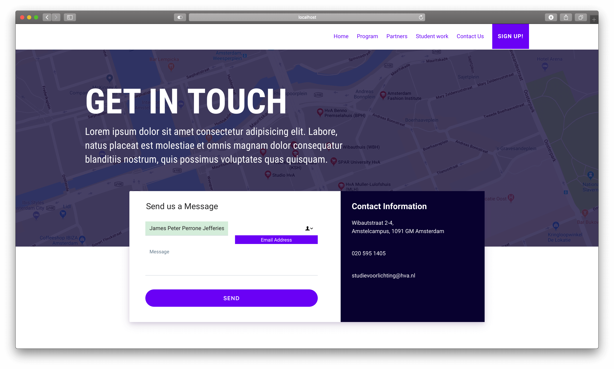
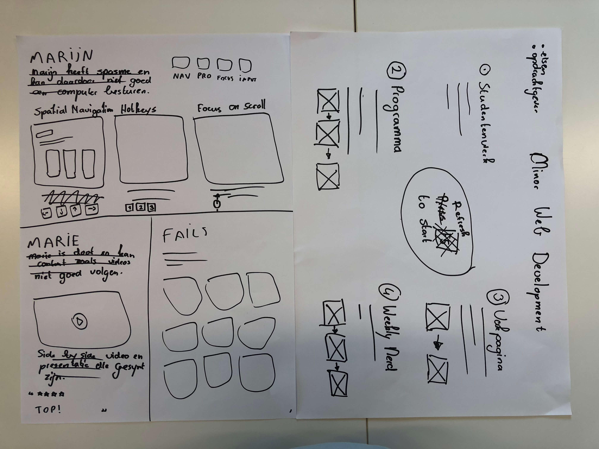

The original project I choose got canceled so I got put in the Minor Website Redesign one. With for me was ok. After working on so many projects alone I really wanted to work inside a group. Not everyone shared the same vision but I somehow convinced them to work as a five-man group.
Today we had to come up with 3 different learning goals for this project, my where:
We discussed a lot of different things today. First of all, we interviewed every teacher in order to understand what they really wanted with this redesign.
We looked at the content we already had and decided on what we were missing in order to complete the assignment. Together we looked at our stakeholders and users. Lastly, we split our users into multiple smaller groups: CMD-students, non-CMD-students, companies looking for inspiration and companies looking for new workers.
Before wrapping up the day we came up with a concept and decided that we should only work on the front-end and leave the back-end for another group and another time.
The first thing we did this morning was writing down every piece of information we should need in order to complete our concept.
Our data and content got really complex and really fast. Especially the connection between our content got out of hand. In order to keep everything readable, we decided to make a database/class diagram.
Lastly, we started sketching the different pages and templates we should need. This was all about speed and quantity. Every sketch was super low-fy but extremely helpful for down the road.
Today in the morning we made some more sketches based on yesterday’s work.
With the new, more detailed sketches we started working on our first wireframes. For the wireframes, we used a program named Figma because in Figma multiple people can work on the same design simultaneously. Just like Google Docs.
Originally Bas was going to work on the style guide today but he got sick. So I, Jelle and Rick started doing this for him, everything on HTML and CSS so we could easily reuse it later on.
Today I started working on the project structure, setting up tooling, creating a folder structure and creating the necessary files to get started. This was part of my learning goal so I made some research on complex project structures and codebases.
I and Bas continued working on yesterday’s style guide. My main focus was typography, colors and form elements. This of course took a long time, especially because we needed to be flexible in order to be future proof. Again, the structure was a very important thing for me.
The first thing we did today after our daily standup was to discuss with colors we should use. None of us wanted to use the current black on yellow color scheme. After some research and playing with different options we decided to go with a sharp pink and dark purple. Not everyone was equally happy but we all decided we needed to move on. Current Colors: Primary: #FF015D | Secondary: #3D195B.
After deciding on our brand colors each of us started working on the required components and templates. My main priority today was the partners & team template. Sadly I didn't make a screenshot that day.
Today I could not get to school, so I decided to work from home. Everyone had it's own tasks so I knew exactly what to do.
Just like yesterday, today's foci were the templates and components. Today I focused on the signup page, contact page and generally form styles. Again, no screenshot but it was only HTML anyway.
Today my team members had a test session with Marijn for the first time. He could not get to school so they had to go to his home. About 3 hours from here... I can't say much about today's test session because I was not there.
Today was the redo day! I, Jelle and Jamal started the day rethinking our current design. We made some new wireframes, changed some old components and we came up with a new design style. Therefore we spend almost the entire day redoing what we did before.
One of the bigger changes was the partners & team templated I worked on before. The previous version was very clean and standard, we wanted something more. I sat down and gave the old template a new life.
PS: Ignore the colors of this image, they are the new ones.
Today I learned a new feature about GitHub thanks to Titus. We all know we can merge branches inside other branches. This will generate a merge message and keep all the different commits. But did you know you can squash all the commits inside a single one and avoid the merge message? By doing this you can keep your master or developer branch clean and readable.
Today we spend a good time of the day reviewing every single line of code we had. Giving feedback to team members, helping them and generally cleaning all the unnecessary bullshit we had.
Lastly, I have worked on a lot of different small stuff today, nothing worth a screenshot but a lot of different fixes and teaks. For example adding helper classes, fixing the layout using grid and adding a footer.
The first thing we deed this morning was a test session with Marrie. It went mostly ok, we talked a lot about design choices and most of her feedback was easily fixed. I can't say the test itself was very helpful because while she is deaf, she can navigate the website just like anyone else.
Go to test session resultsToday was mostly a header day for me. I have redesigned every single header. I could spend a few minutes here writing about it but an image says more than a thousand words, right?
Lastly, we wasted about 2 hours talking about colors. It seems we needed new ones because of contrast concerns. But you know what? It is damn hard to get everyone on the same line and happy with the chosen colors. We will need to discuss this further next week.
I spent last weekend playing with Homebrew for the first time. Everything seemed to be working just fine until today in the morning. I somehow managed to break node and npm. After several hours I was able to fix my mistakes. This took, however, a good portion of the day.
For the first time in this project, we presented our work to Vasilis. We discussed some stuff like the planning and we talked about our testing session from last Friday. He seemed quite happy with our progress so far, and that got us quite excited!
I also started working on the contact page, just the structure for now but it is a start. I hope to finish the basic styling tomorrow.
Contact (WIP)
Signup (Before)
Signup (After)
After wasting almost the entire day last Friday, we were finally happy with our new branding colors. I guess sleeping 2 days over it was all we needed. New Colors: Primary: #5D085C | Secondary: #9E2E4E.
Multiple navigation, header & spacing fixes.
Today I built a spatial navigation DEMO for the program page. We will be testing it tomorrow with Marijn. For us, it works great, however, we are very excited and curious about tomorrow’s test results.
I have spent about one hour building a nice parallax effect for the partner's template, however, it conflicted with Rick’s animation library. In the end, I choose to delete what I had done in order to prevent further animation bugs. Another hour lost but it was fun nonetheless.
Today I and Jelle had a new conversation about branding colors. No one was really happy with our colors from Monday. After some work, we have selected 2 new colors. New Colors: Primary: #09012f | Secondary: #6a00f5.
New colors can be seen in the new contact page! In can you didn't noticed I updated the contact page today!
From 03:15 PM to 03:45 PM me and my team had to prepare the media lounge for today’s ICONS meeting. We had to create sit places for about 100 guests. This was a strange request made by Vasilis but we did it anyway. Today’s ICONS was also our last “weekly nerd”, with means more sketchnoting… Yeahhh
Today in the morning I spend around 2 hours working on my progress blog. Especially on the styling and structure. I won’t be posting images about its progress mostly because you are viewing it live!
The program page was working quite well with its new spatial navigation functionality. However, users could sometimes focus on hidden elements outside their viewport. I have added some new functionality that will center the viewport around the focused item for a better user experience.
I have made some changes to the contact & signup pages. The contact page got a new header image while the signup page got updated to reflect the new form styles.
I also spend a good amount of time working on the form hover & focus states, form validation and general button styling.
Today I have spent some time working on the responsive design of the website, especially on the partners & team page.
Lastly, it is Wednesday! With means another test session with Marijn. Our main focus for this session was the program page and our forms (Contact & Signup). More information about today’s test can be found below.
After yesterday’s test session with Marijn, we learned a lot of new insights. One of the bigger problems was the fact that my spatial navigation function hijacked the default browser behavior for the arrow keys. Meaning that users could not scroll up or down using the arrow keys. After several hours I was able to find and squash the bug.
I spend some time looking into CSS clip path and I helped Rick with his animation script.
Today I sat down with Bas for a pair-programming session where I helped him work on the design and structure of the homepage.
We started the day with a new test session with Marie, she was really impressed with our progress compared to last week. Other than our default website we also presented her some experimental video player controls made by Jelle. She seemed really pleased.
Today we had a discussion with Vasilis about the project itself. It seems we will be focusing on experimental demos and leave the minor website where it is for now. A bit disappointing but we need to keep our client happy. I will be focusing on a new feature that I labeled as “Focus on Scroll”.
So… I have spent the entire day working on the new feature and I thought that I had it working, however, it is broken as fuck. It works great when scrolling with the mouse, spacebar or arrow keys but the tab key is completely useless as you can see in the image below. I have no idea how I can fix this for now, but this is something for next week.
Lastly I helped Jamal with his shortcut navigation where users can navigate the website using simple shortcuts like 1, 2 or 3.
Today I worked from home. My younger sister woke up very sick and I had to bring her to the hospital, afterward I stayed home with her.
Around 11 AM I started working on last week’s focus on scroll functionality. I decided to start from scratch and it seems this was the right choice. Everything is working as expected now. I have made four different variations so we can test them with Marijn on Wednesday. The first and second versions work on scroll, the third version on hover and the fourth version on hover plus keyup. Creating this four demos took me a lot of time, I really hope Marijn likes at least one of them.
Today in the morning I spend a lot of time trying to create a homepage concept. I have made different designs all based on bubbles and blobs. I really want to use CSS clip mask, especially because you can animate the forms and I never tried it before. However, my inspiration was as good as none. This is all I managed to put together. (Not my illustration, just a placeholder.)
I also implemented yesterday’s focus on scroll functionality to our actual website. I did have to update every template and the script itself but everything is working fine now. However, a lot of elements do not have a focus state yet.
Today I and Jelle helped Jamal with his shortcuts navigation functionality. It was quite buggy and hard to debug, at least everything is working fine now.
Multiple random bug fixes. For example missing links, typos and CSS fixes. It was a long day full of smaller nonessential fixes.
Lastly, I started working on the posters for next week’s presentation. Just the layout, for now, tomorrow I will work on the design.
I started this morning updating my progress blog. Added missing content, images and test results. The images where quite large so I compressed them using tinypng.org.
I also played GitHub master today. I have reviewed multiple pull requests squashed them and merged them. I have to say, this was extremely boring.
I have spent most of the day working on a new feature. It is a system that automatically writes CSS into the browser. Users can see the effect of each line with a live animation. Even better they can edit every single line! I am super excited about this one.
We had our last weekly nerd today. Our guest speaker was Bruce Lawson and you can find my notes on the weekly nerd blog.
Lastly we had our last test session with Marijn. He was quite happy with the fact that we had multiple demos and versions for him to test. We have built some strange and useless stuff the last few days, however, he was genuinely interested and excited about some of our demos.
Today was a strange day, it felt like time flew extremely fast. I have spent the entire day working on the CSS editor function from yesterday. I have created a new header for our homepage where I implemented the code editor. It looks and works very nice! I did, however, break every focus and hover state. I am not looking forward to fixing it…
We started today with our last test session for this project. Today’s test session was with Marrie and her helper. We had prepared multiple prototypes for her to test, but in the end, we changed some stuff up. Other then the video player we collected as much information about the website itself as we could. You can find today’s test result below.
After yesterday’s mistake breaking every hover and focus state I made a new branch where I copied the code needed for my awesome header without breaking anything. Finally, I pushed the new changes to the developer branch with some small modifications.
The end is near so we decided to sit down and make a TODO list with everything missing for next weeks presentation. While the list is huge, I am quite sure we can get it done on time.
Lastly, Bas finally finished working on the database so we sat down and made sure it was working on everyone's machine. We can finally display some pages with real content!
We started today in the morning sketching some poster ideas for Wednesday's presentation.
We have two more days left to work on our website, so the only things we can do now are small fixes and hope that everything gets finished on time. Here are some of the fixes I implemented today: